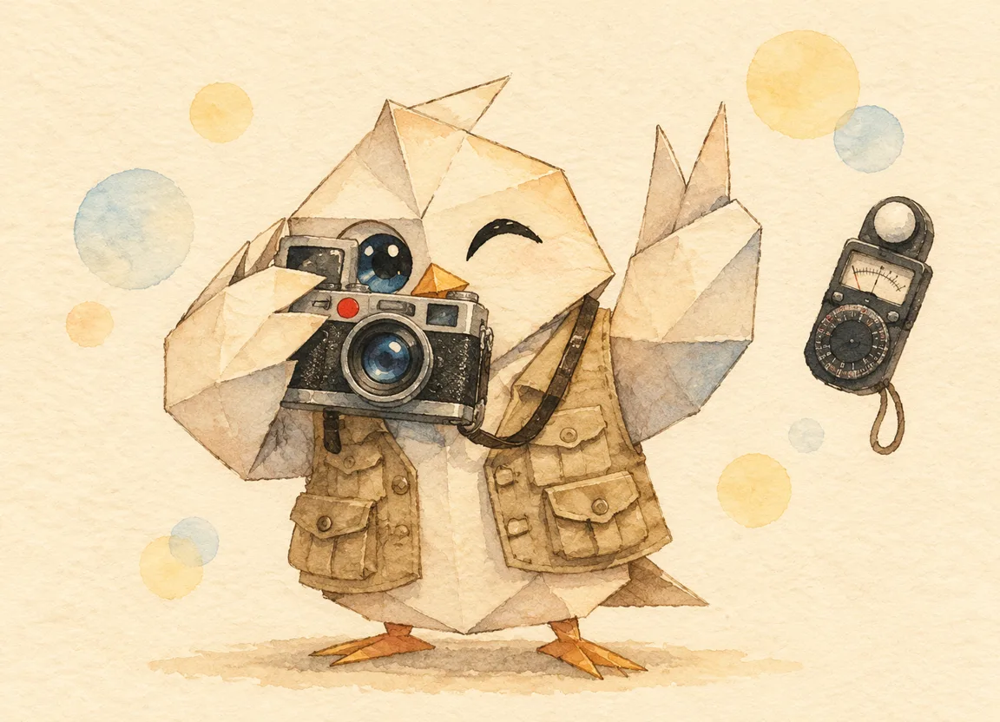

INTERACTIVE一部可以上手玩的相机原理手册
按下一半快门的那一瞬间，你的相机里发生了一整场接力：光穿过一组会呼吸的叶片，两道帘幕打了个时间差，几百万个感光格子各自数清自己接住了几颗光子。这台手册把相机拆给你玩——每一段都能拖、能拉、能亲手按下去。

两千多年前就有人发现：给暗屋开一个小孔，墙上的影子是倒立的。光沿直线走——物体顶端的光只能落在墙的低处。这间「暗屋」拉丁文叫 camera obscura，相机的名字就从这来。
把小孔换成凸透镜，两件大事发生了：进光量大幅增加（透镜比针孔大得多），而且只要「物距、像距、焦距」满足关系，倒像会变得又亮又清晰。整台相机，就是这只暗箱的两千年进化史：把孔换成镜头组、把墙换成传感器、把屋子缩小到手掌大小。
镜头深处藏着一圈可开合的金属叶片——光圈。它模仿的就是你眼睛的瞳孔：光弱就张开，光强就缩小。f/1.4 张到最大，f/22 只留一个针尖。
f 值有个反直觉的地方：数字越大，孔越小。因为 f 值 = 焦距 ÷ 孔径，是个「除出来的数」。每缩小一档（f/2.8 → f/4），进光量减半。光圈还有个副业：孔越小，前后多远的东西都算清楚——这叫景深，拍人像虚化背景靠的就是把孔开大。
传感器前面横着两道不透光的黑色帘幕。拍照时：前帘先拉开，光开始曝光；到时间了，后帘追上来盖住。曝光时长，就是两道帘幕之间的时间差。
妙事发生在高速快门：1/8000 秒比帘幕跑完全画面的时间还短，后帘没等前帘到位就得出发——于是曝光发生在一条窄缝扫过传感器的过程中。这也是为什么高速快门拍飞机螺旋桨会「切」出诡异的弯曲叶片：照片不是「一瞬间」，而是一条缝扫完的「一小段时间」。
传感器接住光子之后，把光信号放大成电信号。ISO 100 是原声，ISO 12800 是把音量旋钮拧到头——信号响了，底噪也跟着响。照片上那些彩色小斑点，就是被一起放大的「底噪」。
现代相机的「双原生 ISO」是取巧的妙招：传感器有两套读出电路，各自在某个原生感光度下噪点最低，跨过切换点就换一套——相当于不靠后期放大、直接换更灵敏的耳朵。
光圈管进光孔多大，快门管曝光多久，ISO 管信号放多大——三者相乘决定一张照片的明暗。代价各不相同：光圈换景深，快门换拖影，ISO 换噪点。摄影的功夫，全在「用哪个代价换明暗」。
如果只带走四句话——
光圈开大（小 f 值），长焦，靠近主体——三者都让景深变浅。
快门快于 1/500s；光线不够就拿 ISO 换——噪点总比糊了好。
快门放慢到 1s 级，光圈缩到 f/11，务必上三脚架——流水丝滑要 ND 减光镜。
手持安全线 ≈ 1/焦距秒（50mm 用 1/50s）；糊了的照片光圈再好也没救。
一台相机的全部秘密：把暗箱做小、把孔做成会呼吸的、把墙做成会数光子的。剩下的都是手艺。—— 光学手册 · 完